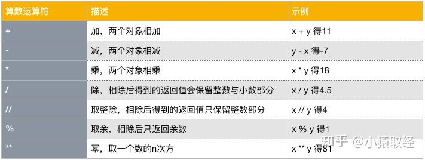
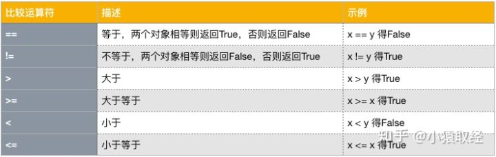
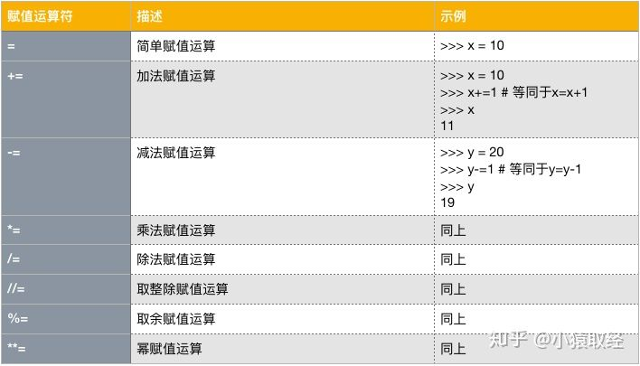
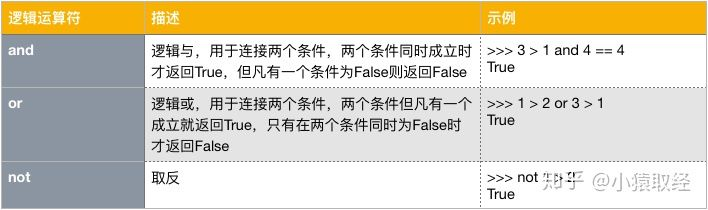
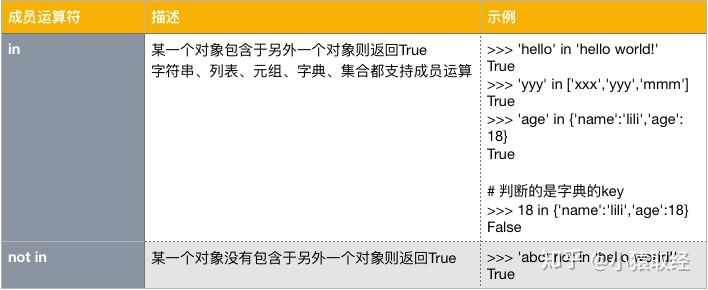
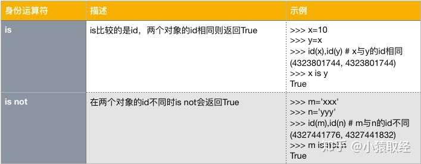

第三章 运算符
1. 算术运算符
python支持的算数运算符与数学上计算的符号使用是一致的，我们以x=9，y=2为例来依次介绍它们

2. 比较运算符
比较运算用来对两个值进行比较，返回的是布尔值True或False，我们以x=9，y=2为例来依次介绍它们

3. 赋值运算符
python语法中除了有=号这种简单的赋值运算外，还支持增量赋值、链式赋值、交叉赋值、解压赋值，这些赋值运算符存在的意义都是为了让我们的代码看起来更加精简。我们以x=9，y=2为例先来介绍一下增量赋值
增量赋值

链式赋值
如果我们想把同一个值同时赋值给多个变量名，可以这么做
>>> z=10
>>> y=z
>>> x=y
>>> x,y,z
(10, 10, 10)
2
3
4
5
链式赋值指的是可以用一行代码搞定这件事
>>> x=y=z=10
>>> x,y,z
(10, 10, 10)
2
3
交叉赋值
我们定义两个变量m与n
>>> m=10
>>> n=20
2
如果我们想将m与n的值交换过来，可以这么做
>>> temp=m
>>> m=n
>>> n=temp
>>> m,n
(20, 10)
2
3
4
5
交叉赋值指的是一行代码可以搞定这件事
>>> m=10
>>> n=20
>>> m,n=n,m # 交叉赋值
>>> m,n
(20, 10)
2
3
4
5
解压赋值
如果我们想把列表中的多个值取出来依次赋值给多个变量名，可以这么做
>>> nums=[11,22,33,44,55]
>>>
>>> a=nums[0]
>>> b=nums[1]
>>> c=nums[2]
>>> d=nums[3]
>>> e=nums[4]
>>> a,b,c,d,e
(11, 22, 33, 44, 55)
2
3
4
5
6
7
8
9
解压赋值指的是一行代码可以搞定这件事
>>> a,b,c,d,e=nums # nums包含多个值，就好比一个压缩包，解压赋值因此得名
>>> a,b,c,d,e
(11, 22, 33, 44, 55)
2
3
注意，上述解压赋值，等号左边的变量名个数必须与右面包含值的个数相同,否则会报错
#1、变量名少了
>>> a,b=nums
Traceback (most recent call last):
File "<stdin>", line 1, in <module>
ValueError: too many values to unpack (expected 2)
#2、变量名多了
>>> a,b,c,d,e,f=nums
Traceback (most recent call last):
File "<stdin>", line 1, in <module>
ValueError: not enough values to unpack (expected 6, got 5)
2
3
4
5
6
7
8
9
10
11
但如果我们只想取头尾的几个值，可以用*_匹配
>>> a,b,*_=nums
>>> a,b
(11, 22)
2
3
ps：字符串、字典、元组、集合类型都支持解压赋值
4. 逻辑运算符
逻辑运算符用于连接多个条件，进行关联判断，会返回布尔值True或False

连续多个and
可以用and连接多个条件，会按照从左到右的顺序依次判断，一旦某一个条件为False，则无需再往右判断，可以立即判定最终结果就为False，只有在所有条件的结果都为True的情况下，最终结果才为True。
>>> 2 > 1 and 1 != 1 and True and 3 > 2 # 判断完第二个条件，就立即结束，得的最终结果为False
False
2
连续多个or
可以用or连接多个条件，会按照从左到右的顺序依次判断，一旦某一个条件为True，则无需再往右判断，可以立即判定最终结果就为True，只有在所有条件的结果都为False的情况下，最终结果才为False
>>> 2 > 1 or 1 != 1 or True or 3 > 2 # 判断完第一个条件，就立即结束，得的最终结果为True
True
2
优先级not>and>or
#1、三者的优先级关系：not>and>or，同一优先级默认从左往右计算。
>>> 3>4 and 4>3 or 1==3 and 'x' == 'x' or 3 >3
False
#2、最好使用括号来区别优先级，其实意义与上面的一样
'''
原理为：
(1) not的优先级最高，就是把紧跟其后的那个条件结果取反，所以not与紧跟其后的条件不可分割
(2) 如果语句中全部是用and连接，或者全部用or连接，那么按照从左到右的顺序依次计算即可
(3) 如果语句中既有and也有or，那么先用括号把and的左右两个条件给括起来，然后再进行运算
'''
>>> (3>4 and 4>3) or (1==3 and 'x' == 'x') or 3 >3
False
#3、短路运算：逻辑运算的结果一旦可以确定，那么就以当前处计算到的值作为最终结果返回
>>> 10 and 0 or '' and 0 or 'abc' or 'egon' == 'dsb' and 333 or 10 > 4
我们用括号来明确一下优先级
>>> (10 and 0) or ('' and 0) or 'abc' or ('egon' == 'dsb' and 333) or 10 > 4
短路： 0 '' 'abc'
假 假 真
返回： 'abc'
#4、短路运算面试题：
>>> 1 or 3
1
>>> 1 and 3
3
>>> 0 and 2 and 1
0
>>> 0 and 2 or 1
1
>>> 0 and 2 or 1 or 4
1
>>> 0 or False and 1
False
2
3
4
5
6
7
8
9
10
11
12
13
14
15
16
17
18
19
20
21
22
23
24
25
26
27
28
29
30
31
32
33
34
35
36
37
38
5. 成员运算符

注意：虽然下述两种判断可以达到相同的效果，但我们推荐使用第二种格式，因为not in语义更加明确
>>> not 'lili' in ['jack','tom','robin']
True
>>> 'lili' not in ['jack','tom','robin']
True
2
3
4
6. 身份运算符

需要强调的是：==双等号比较的是value是否相等，而is比较的是id是否相等
#1. id相同，内存地址必定相同，意味着type和value必定相同
#2. value相同type肯定相同，但id可能不同,如下
>>> x='Info Tony:18'
>>> y='Info Tony:18'
>>> id(x),id(y) # x与y的id不同，但是二者的值相同
(4327422640, 4327422256)
>>> x == y # 等号比较的是value
True
>>> type(x),type(y) # 值相同type肯定相同
(<class 'str'>, <class 'str'>)
>>> x is y # is比较的是id，x与y的值相等但id可以不同
False
2
3
4
5
6
7
8
9
10
11
12
13
14